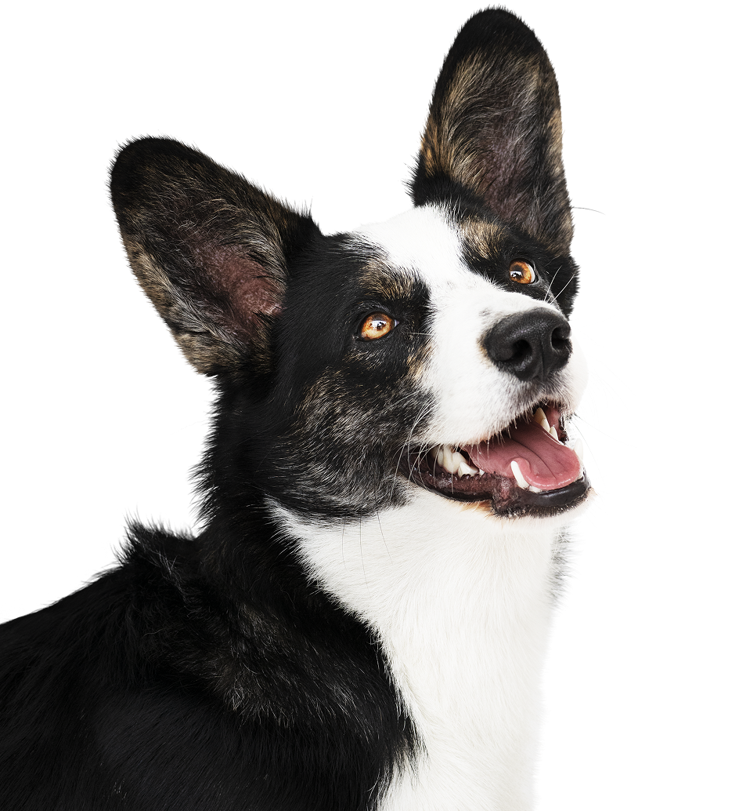
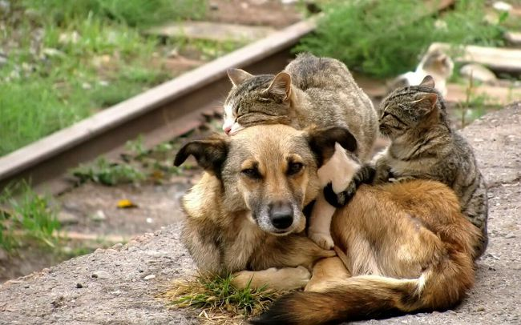
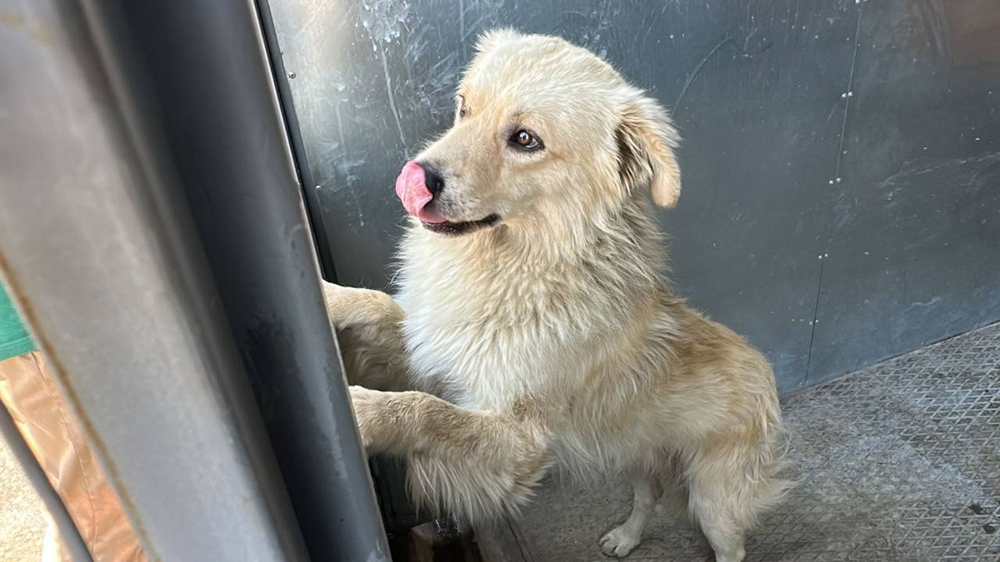
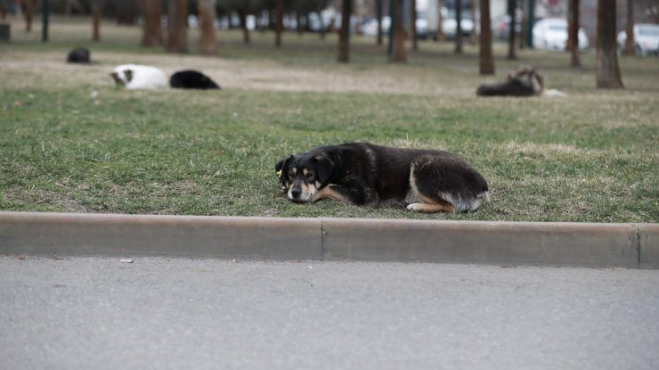

сократить срок оформления права собственности на бездомное животное

по отлову, вакцинации и поиску любящих хозяев бездомным животным

Поводом для вмешательства главы ведомства стало обращение местных жителей.